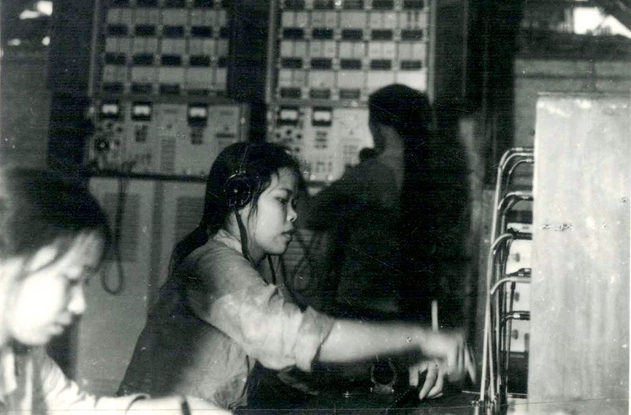
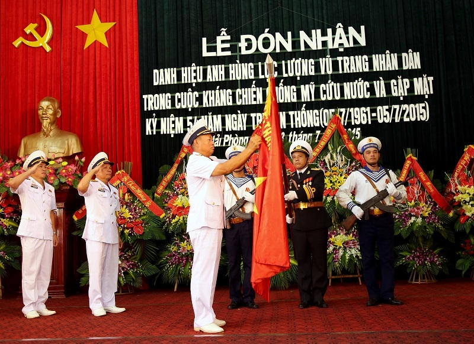

Ngày 5-7-1961: Ngày truyền thống Lữ đoàn Thông tin 602
- Ngày 5-7-1961, Đại đội 3 Thông tin-tiền thân của Lữ đoàn Thông tin 602 ra đời. Cùng với sự phát triển của các lực lượng Hải quân, Đại đội 3 từng bước nâng cấp thành Tiểu đoàn 2 Thông tin (1964), Trung đoàn Thông tin Hải quân 121 (tháng 2-1977), Trung đoàn Thông tin 602 Hải quân (tháng 6-1977) và Lữ đoàn Thông tin 602 (2004).

Các nữ chiến sĩ thông tin của đơn vị đang bảo đảm thông tin phục vụ chiến đấu. Ảnh tư liệu
Trải qua hơn 60 năm xây dựng, chiến đấu, trưởng thành, Lữ đoàn 602 luôn nhận thức rõ vinh dự và trách nhiệm, bảo đảm thông tin liên lạc cho Bộ Tư lệnh Quân chủng Hải quân chỉ đạo, chỉ huy các lực lượng sẵn sàng chiến đấu và chiến đấu thắng lợi trong mọi tình huống, đóng góp xứng đáng vào sự nghiệp đấu tranh giải phóng dân tộc, xây dựng và bảo vệ Tổ quốc. Lữ đoàn vinh dự được Đảng, Nhà nước tặng thưởng danh hiệu cao quý “Đơn vị Anh hùng Lực lượng vũ trang nhân dân”. Cán bộ, chiến sĩ, QNCN đơn vị qua các thời kỳ đã xây đắp nên truyền thống vẻ vang: “Kiên trì, anh dũng; đoàn kết, sáng tạo; khắc phục khó khăn; chính xác, kịp thời; an toàn, vững chắc”.

Với những thành tích, chiến công xuất sắc trong chiến đấu, phục vụ chiến đấu, củng cố quốc phòng, bảo vệ Tổ quốc, năm 2015, Lữ đoàn Thông tin 602 vinh dự đón nhận danh hiệu Đơn vị Anh hùng Lực lượng vũ trang nhân dân.
Đặc biệt, những năm gần đây, Hải quân Nhân dân Việt Nam được xác định là một trong những lực lượng tiến thẳng lên hiện đại, tổ chức biên chế của Quân chủng Hải quân có sự phát triển với nhiều lực lượng mới, hiện đại; tình hình trên biển, đảo diễn biến phức tạp đặt ra yêu cầu, nhiệm vụ bảo đảm thông tin liên lạc cao hơn. Đảng ủy, chỉ huy và toàn thể cán bộ, chiến sĩ Lữ đoàn đã đoàn kết một lòng, khắc phục khó khăn, triển khai các phương án bảo đảm thông tin liên lạc cho các lực lượng; tổ chức huấn luyện nâng cao trình độ chuyên môn, khai thác làm chủ trang bị khí tài thông tin, nhất là thông tin công nghệ cao. Lữ đoàn luôn bảo đảm thông tin liên lạc kịp thời, chính xác, bí mật, an toàn cho Đảng ủy, Bộ Tư lệnh Quân chủng lãnh đạo, chỉ đạo các đơn vị bảo vệ vững chắc chủ quyền biển, đảo, bảo vệ an toàn các hoạt động kinh tế biển và tìm kiếm cứu nạn trên biển.